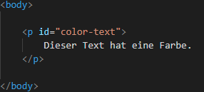
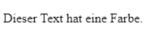
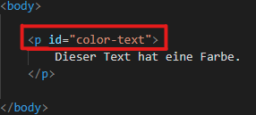
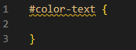
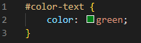

Farben in der HTML

Jetzt erkläre ich dir wie man Farben in HTML bzw. CSS verwendet. So schwer ist das garnicht wie ihr alle
denkt
Als 1. braucht man einen Text oder ein Wort, also so:
1.

Hier habe ich mit dem Befehl "p" (Absatz) einen Satz eingefügt der lautet:
"Dieser Text hat eine Farbe." und habe diesem direkt eine sogenannte "id" zugeteilt, dazu kommen wir
gleich nochmal.
2.

So sollte es bis jetzt auf deiner Website aussehen. es sollte also einfach nur dein Text dort stehen
mit der Standartfarbe Schwarz. Was wir im nächsten Schritt ändern werden. Wir oeffnen jetzt unser CSS
Dokument mit dem wir mit der vorhin genannten "id" die Textfarbe ändern koennen.
3.

Mit dieser rot markierten "id" ändern wir jetzt die Farbe.
4.

Hier habe ich mit dem "#" gesagt das ich eine bestimmte "id" bearbeiten moechte hinter das "#"
habe ich die "id" geschrieben, die ich dem Text zugeteilt habe. Danach schreibt man 2 Geschweifte Klammern
und dazwischen schreibt man jetzt was man dem Programm sagen moechte. In dem Fall wollen wir ja nur die
Farbe
ändern das sieht dann so aus:
5.

Mit dem Befehl "color" gebe ich IMMER die Farbe meines Textes an. In dem Fall
habe ich die Farbe grün gewählt und habe diese hingeschrieben. Am Ende so ein Commands kommt auch
IMMER ein sogenanntes "Semikolon" (;) mit dem sagt man dem Programm das dieser Command
hier beendet ist.
Am Ende sollte dein Text also so aussehen:
Also... wie du siehst, es ist wirklich nicht Schwer einfach nur die Farbe zu ändern. Zu einer Textbearbeitung
gehoert zwar weitaus mehr als nur die Farbe zu ändern allerdings musst du dann mal wo anders nachlesen und das
in Ruhe lernen denn da kann es schonmal schwerer werden. Ich hoffe es verständlich erklärt zu not lese es mehrmals
durch bis du es verstehst.
Falls es dann immernoch nicht klappen sollte Kontaktiere und gerne und wir werden
dir auf jedenfall helfen.